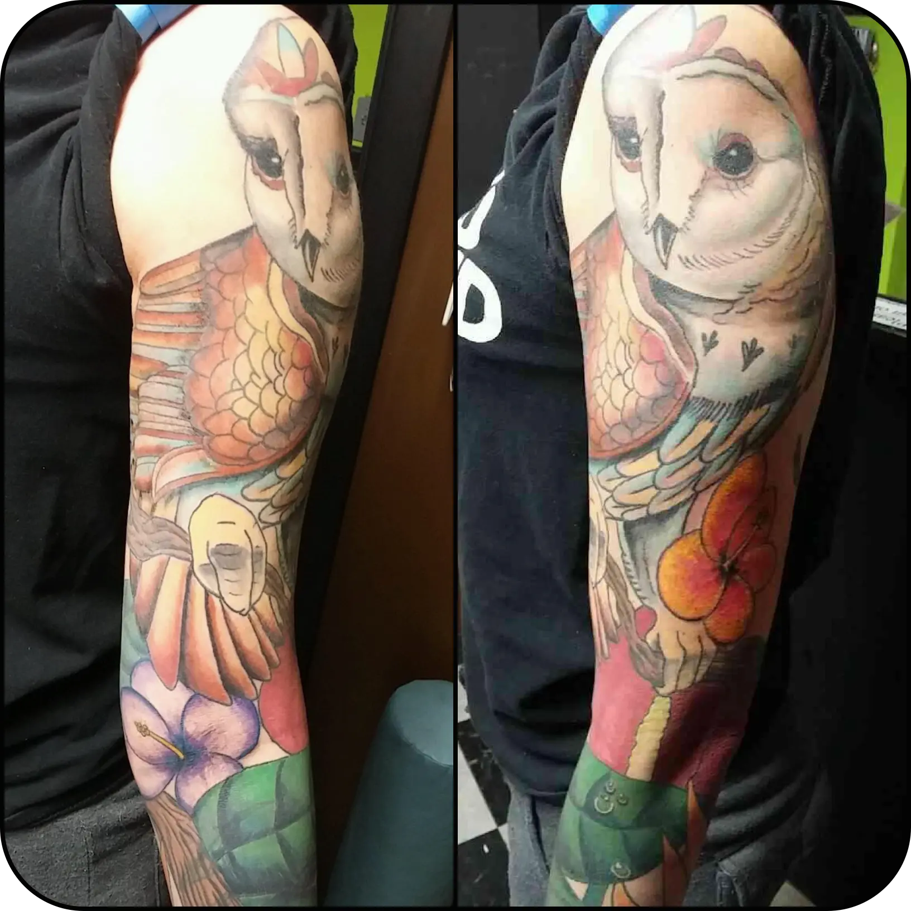
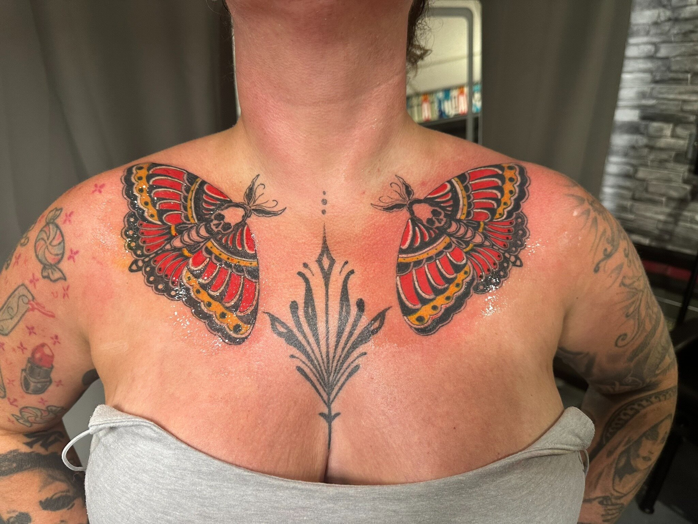
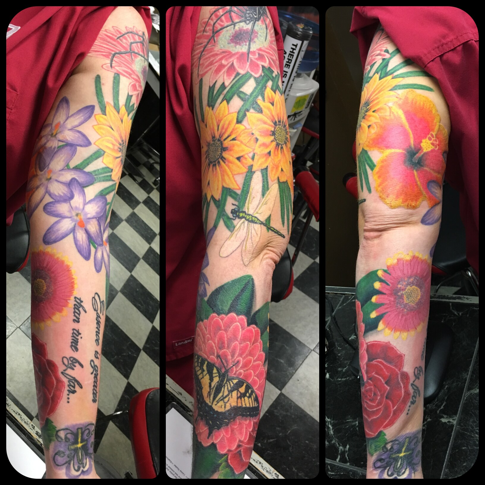
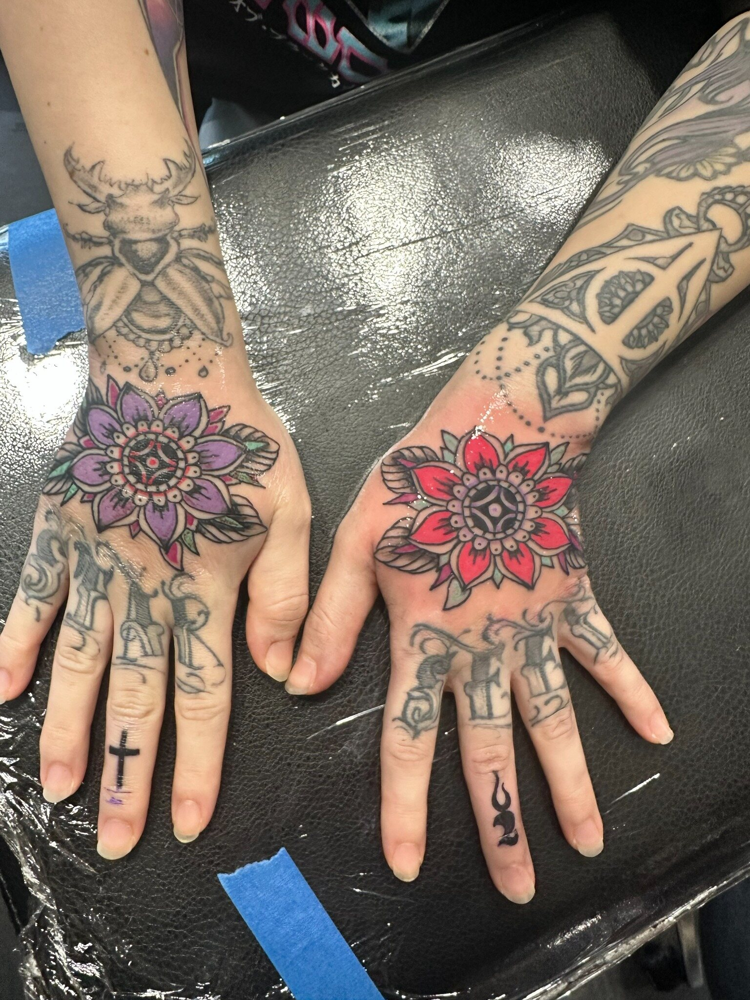
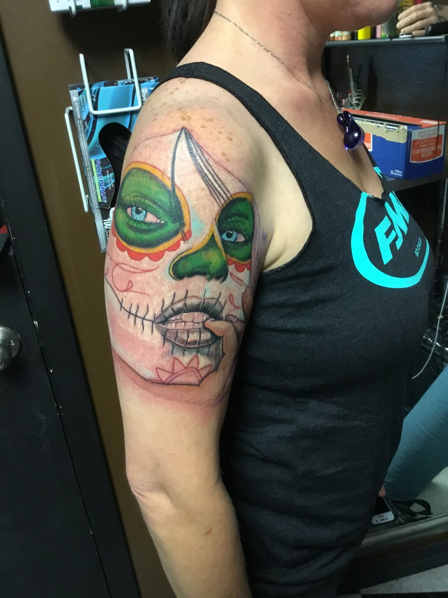
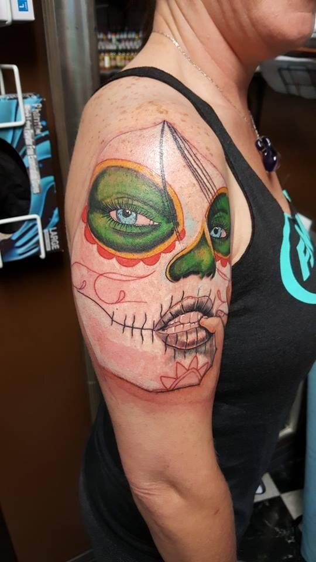
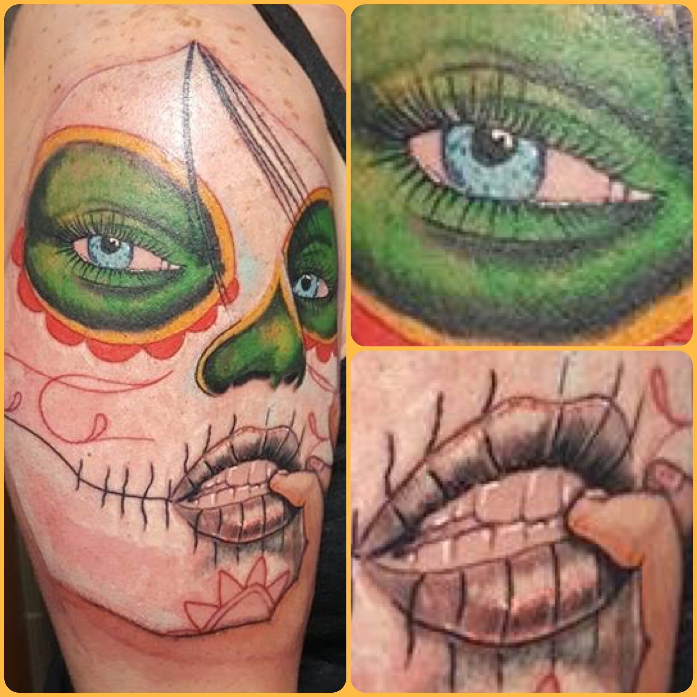

Palette
A limited group of related colors usually creates more control than placing every hue at equal intensity.
Color Tattoos • Oklahoma City
Josh uses color as part of the structure of a tattoo—not as decoration added at the end. Palette, contrast, placement, and surrounding skin all affect the final result.

Josh’s planning approach
A tattoo does not need every available color to feel bright. Josh plans a dominant palette, supporting colors, darker anchors, and open areas so individual forms remain separate from one another.
The design also has to work with the client’s skin tone and the amount of sun exposure the placement receives. References can communicate the mood and palette, but the final color decisions are adjusted for the actual tattoo and body location.
Design priorities
These decisions determine whether the idea works as a tattoo on the selected body area.
A limited group of related colors usually creates more control than placing every hue at equal intensity.
Dark outlines, shadows, and quieter areas give saturated colors room to appear brighter.
Curved and moving areas require color blocks that remain recognizable as the body changes position.
Healing, sun protection, and long-term skin care all affect how color continues to look.
Placement and execution
A sleeve can move through several color families while still feeling unified. A shoulder tattoo benefits from a strong outer shape that holds together when viewed from the front, side, and back. Smaller pieces usually need fewer competing colors and a faster visual read.
Josh’s published portfolio includes saturated ornamental work, botanical color, illustrative subjects, and traditional color. During consultation, he uses the subject and placement to determine whether bold saturation, restrained accents, or a black-and-gray foundation makes the most sense.

Portfolio connections
Project pages discuss only the facts visible or published. Private client stories, exact session counts, and healed status are not invented.
A central owl supported by floral color and layered background elements.
View details →
Color • Chest Piece
View image →
Layered flowers, insects, and saturated color organized across a full sleeve.
View the gallery →
Color • Hand Tattoos
View image →
Color • Day of the Dead
View the gallery →Sugar skull project
These views show the same custom upper-arm tattoo from its overall composition through close-up details.


Prepare for consultation
Questions clients ask
Not every subject or scale supports the same palette. Josh may simplify the number of colors or recommend more dark structure so the design remains readable.
Yes. Ink is viewed through healed skin, so the same color can appear different from person to person. Palette and contrast should be selected with the individual client in mind.
Follow the aftercare instructions from your artist, avoid soaking while healing, and protect healed tattooed skin from ultraviolet exposure.
Possibly. Send clear photos and bring the area to consultation so he can evaluate the existing palette, fading, line weight, and available space.
Start the project
Share the subject, body location, approximate size, references, and any existing work in the area.